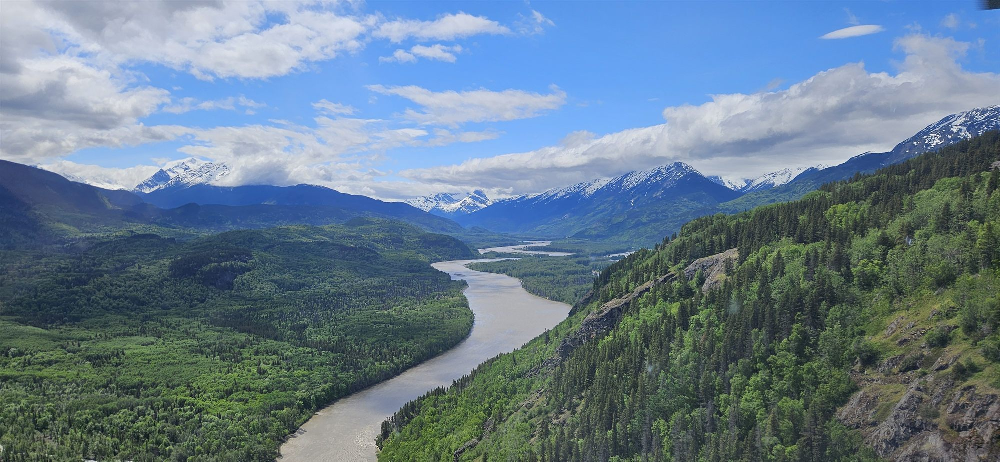
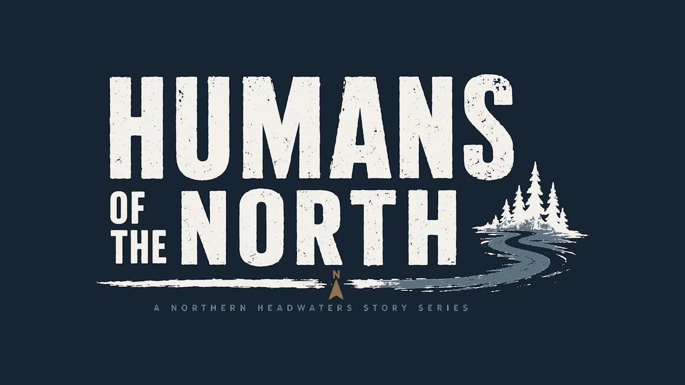

Northern BC's headwaters country
Protect the source.
Keep the country open.
The Skeena. The Nass. The Stikine. The Taku. The Liard. Five of the continent's great rivers begin in northern British Columbia — cold factories of salmon, moose country, working country. The decisions being made right now will shape all of it for generations.
The situation
The rush is on. The plan matters.
Ottawa and Victoria are fast-tracking major projects across the North — and at the same time, three big protected-area proposals are on the table with real Northern backing. What gets decided in the next few years sets the map for decades.
The money is coming north
Canada's new Major Projects Office put the Red Chris expansion in its first tranche; ~$500 million in federal support followed in July 2026. BC is expediting permits across the region. Roughly $20 billion in mining investment is planned or underway.
What starts here can't be rebuilt
The Meziadin is 3% of the Nass watershed and produces roughly 75% of its sockeye. The Klappan is the shared birthplace of the Skeena, Nass and Stikine. You can re-permit a mine. You can't re-permit a salmon nursery.
Protection is on the table — now
Three proposals — the Meziadin, the Klappan, and Dene K'éh Kusān — are open for public comment until Aug 4 at 4 pm. Hunting, fishing and backcountry access stay in. This is the moment to be counted.
The fix
One region. Three zones. Zero chaos.
The North doesn't need a fight between mines and salmon — it needs a plan. Protect the sources that feed everything downstream. Steward the country people live from. Keep working lands working, with clear rules and defined footprints.
That's what the current proposals actually do: the protected areas keep hunting, fishing, trapping and snowmobiling in — and put industrial development where it belongs, not in the nurseries.

Newsroom
Latest from the headwaters

Humans of the North
The people who know this country
"This whole area, when you look across, it's all protected. What I'm wearing here is the Dene K'éh Kusān. It means: will always be there." — Bill Lux, Kaska Dena, Dease River First Nation
Guides, homesteaders, land guardians, lodge families — people with generations in this country, telling it straight.
Meet the Humans of the NorthTwo sentences beat an essay.
The province is asking what you think of the three proposed protected areas — on the record, from real people, not just lobbyists. If you work, guide, hunt, or fish this country, say so. That's what gets weighed.